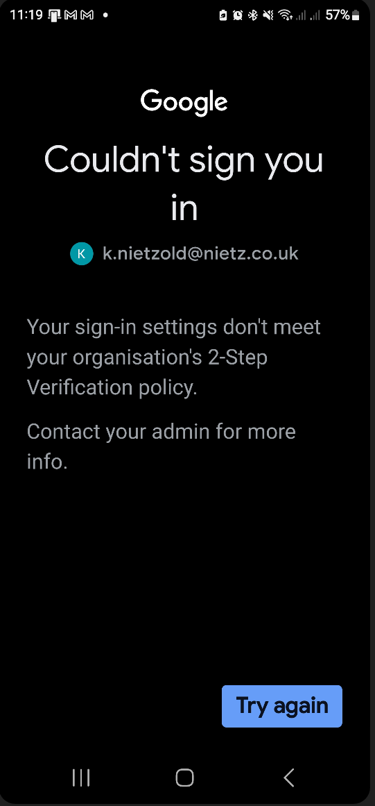
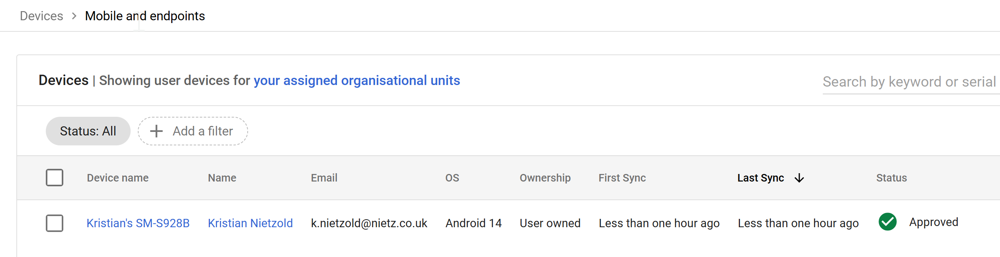
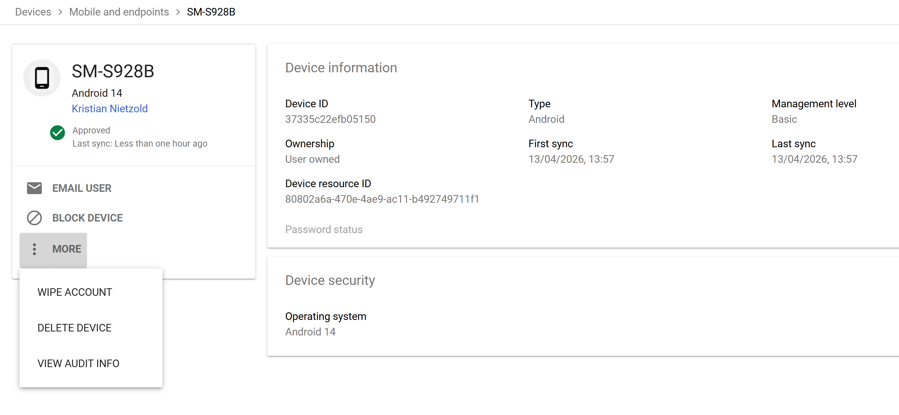

Overview
This section demonstrates how device access is secured and managed within Google Workspace using Basic Mobile Device Management.
Focus areas:
Policy enforcement • Device compliance • Monitoring • Real-world validation
Policy enforcement • Device compliance • Monitoring • Real-world validation
Device Management Configuration

Basic mobile device management configuration
Configuration
- Management level: Basic (agentless)
- Scope: Organisation-wide (Nietz Ltd)
Capabilities
- Remote account wipe
- Basic password enforcement
- Device approval tracking
Configuration Applied

Settings applied across organisation
- Mobile management enforced for all users
- Devices must meet minimum security requirements
- Admin visibility enabled
Policy Enforcement (2-Step Verification)

Access blocked due to missing 2-Step Verification
Outcome
- Access automatically blocked
- User prompted to enable 2SV
- Demonstrates identity-based access control
Why this matters:
Devices alone are not trusted — identity security is enforced first.
Devices alone are not trusted — identity security is enforced first.
Device Enrolment

Device successfully enrolled after meeting requirements
- Status: Approved
- Ownership: User-owned (BYOD)
- Active sync confirms connection
Device Inspection

Detailed device information in Admin console
Available Information
- Device ID and resource ID
- Operating system (Android 14)
- Ownership type
- First and last sync timestamps
- Management level
Admin Actions
- Block device
- Wipe account
- Remove device
- View audit logs
Devices Overview

Centralised device management dashboard
- Separation of device categories
- Managed vs unmanaged visibility
- Centralised policy control
Design Rationale
- Basic MDM provides essential controls without complexity
- 2-Step Verification ensures secure access
- BYOD support balances flexibility and control
Validation
- Non-compliant devices are blocked
- Compliant devices enrol successfully
- Device status updates in real time
- Admin controls function correctly
Real-World Considerations
- Advanced management required for company-owned devices
- Strong identity controls required for BYOD
- Lifecycle processes must include onboarding and offboarding
- Policies should scale with organisation growth
Summary
- Device management successfully implemented
- Identity and device security integrated
- Policies validated through testing
- Admin control established across devices
This configuration provides a secure and manageable device environment
supporting modern, flexible working practices.